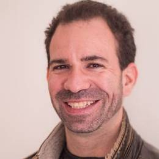

People

Jonathan Stray
Jonathan Stray is a leading researcher on how machines shape human conflict. For two decades he has published theoretical and experimental work across computer science, communications and conflict resolution. He led the Prosocial Ranking Challenge, a large field experiment showing that alternative social media ranking algorithms can reduce affective polarization. He also writes the Better Conflict Bulletin, a newsletter on how to have the conflicts we need without the destructive ones. He is a Senior Research Scientist at UC Berkeley’s Center for Human-Compatible AI and a doctoral candidate at the University of Oxford.
Helena Puig Larrauri
Helena Puig Larrauri is co-founder and Strategy Lead of Build Up, which works at the intersection of peacebuilding, mediation and technology. Since managing a UN peacebuilding programme in Sudan’s Nuba Mountains, she has built AI-enabled tools for mediators, including the open-source social media listening platform Phoenix, and written on how algorithms shape polarization and violence. She is a Senior Advisor on Digital Technologies and Mediation to the UN Mediation Support Unit and an Ashoka Fellow.